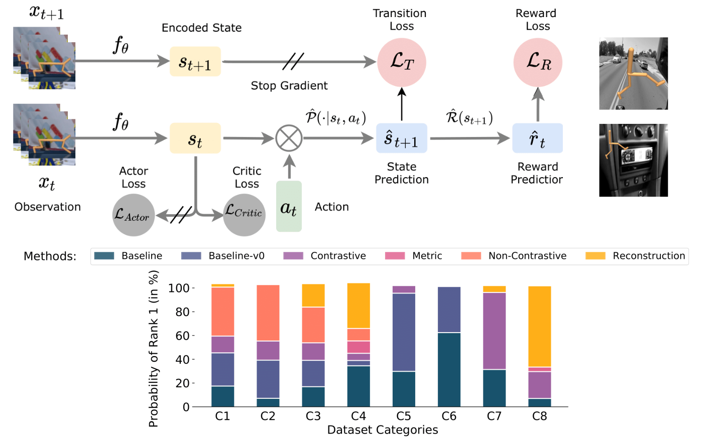
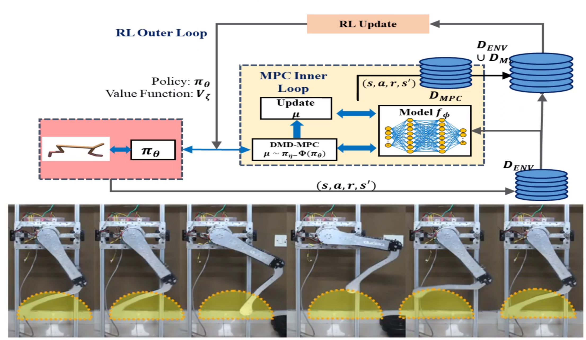
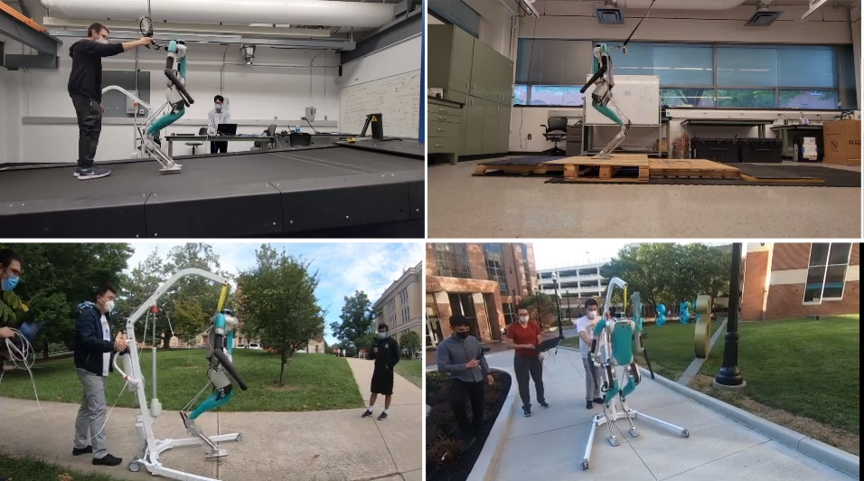
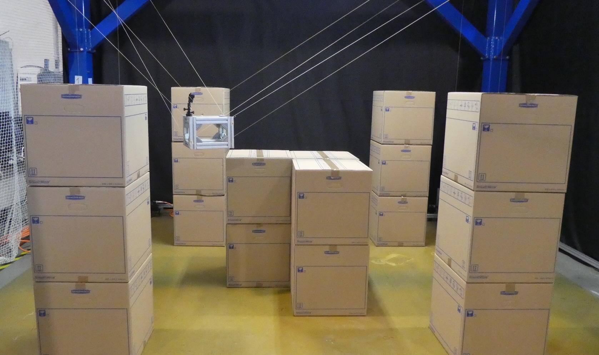

Hi! I am Utkarsh Mishra. I graduated from IIT Roorkee with a B. Tech. Mechanical Engineering in 2021. Currently, I am working with Prof. Matthew E. Taylor at the Inverse Reinforcement Learning lab, University of Alberta and Prof. Shishir Kolathaya at the Stochastic Robotics lab, Indian Institute of Science. I am particularly ineterested in exploring self-supervised task representations and planning based supervision to achieve efficient robot learning and safe autonomy. Recently, I have finished my work on exploring accelerated hardware-in-loop reinforcement learning and locomotion in legged robots. I have also worked on Cable Driven Robots with Dr. Stéphane Caro at CNRS-LS2N France. Previously, I have collaborated with Prof. Auke Ijspeert and Dr. Dimitar Stanev at the Biorbotics Laboratory, EPFL. I have also spent some time under the guidance of Prof. Pushparaj M. Pathak and Prof. N. Sukavanam at IIT Roorkee.
Selected Articles

Poster: Ecological RL workshop at NeurIPS 2021.

Poster: 2nd Offline RL workshop at NeurIPS 2021. Poster: Deep RL Workshop at NeurIPS 2021.


Special Issue: IDETC/CIE 2021 M&R Conference.
